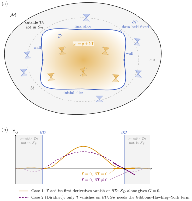

10.1 Spacetime
Chapter 10 • General Relativity
10.1 Spacetime
A spacetime is the sextuple \((\mathcal{M}, \mathcal{O}, \mathcal{A}^\uparrow, \nabla^{\text{LC}}, g, \textrm{\runic ᛏ})_4\), formed by
\((\mathcal{M}, \mathcal{O}, \mathcal{A}^\uparrow, g)_4\) is a 4-dimensional oriented metric manifold whose metric \(g\) is Lorentzian1, and \(\nabla^{\text{LC}}\) is its Levi-Civita connection, the only torsion-free connection compatible with \(g\) ;
\(\textrm{\runic ᛏ} \in \Gamma T\mathcal{M}\) is a time orientation: a nowhere-vanishing vector field, \(\textrm{\runic ᛏ}(p) \neq 0\), with \(g_p\big( \textrm{\runic ᛏ}(p), \textrm{\runic ᛏ}(p) \big) > 0 \, \forall p \in \mathcal{M}\).
In general relativity, \(g\) is moreover required to satisfy the Einstein equations, formulated later in this chapter. Everything below holds for any spacetime.
A non-zero tangent vector \(\mathcal{X}_p \in T_p\mathcal{M}\) is called
timelike if \(g_p(\mathcal{X}_p, \mathcal{X}_p) > 0\),
lightlike (or null) if \(g_p(\mathcal{X}_p, \mathcal{X}_p) = 0\),
spacelike if \(g_p(\mathcal{X}_p, \mathcal{X}_p) < 0\),
and causal if it is timelike or lightlike. The lightlike vectors of \(T_p\mathcal{M}\) form the light cone at \(p\). For the velocity of a curve, this classification is the sign of Chapter 7: a non-zero \(v_{\gamma(\lambda)}\) is timelike, lightlike or spacelike if and only if \(\textrm{\runic ᛇ}_\gamma(\lambda) = +1\), \(0\) or \(-1\).
Future and past. A causal vector \(\mathcal{X}_p\) is called
future directed if \(g_p\big( \textrm{\runic ᛏ}(p), \mathcal{X}_p \big) > 0\),
past directed if \(g_p\big( \textrm{\runic ᛏ}(p), \mathcal{X}_p \big) < 0\),
The time orientation, \(\textrm{\runic ᛏ}\), serves to declare, from the two “sides” of the light cone, which one contains \(\textrm{\runic ᛏ}(p)\), which is defined as the future direction.
A smooth curve \(\gamma : \mathbb{R} \to \mathcal{M}\) is the worldline of
a massive particle if \(v_{\gamma(\lambda)}\) is timelike and future directed for all \(\lambda \in \mathbb{R}\), i.e. \(\textrm{\runic ᛇ}_\gamma \equiv +1\) and \(g_{\gamma(\lambda)}\big( \textrm{\runic ᛏ}(\gamma(\lambda)), v_{\gamma(\lambda)} \big) > 0\);
a massless particle if \(v_{\gamma(\lambda)}\) is lightlike and future directed for all \(\lambda \in \mathbb{R}\), i.e. \(\textrm{\runic ᛇ}_\gamma \equiv 0\), \(v_{\gamma(\lambda)} \neq 0\), and \(g_{\gamma(\lambda)}\big( \textrm{\runic ᛏ}(\gamma(\lambda)), v_{\gamma(\lambda)} \big) > 0\).
The proper time along a massive worldline \(\gamma\), between the events \(\gamma(\lambda_1)\) and \(\gamma(\lambda_2)\), \(\lambda_1 < \lambda_2\), is its length with \(\textrm{\runic ᛇ}_\gamma \equiv +1\): \[ \tau_{[\lambda_1, \lambda_2]}[\gamma] \coloneqq L_{[\lambda_1, \lambda_2]}[\gamma] = \int_{\lambda_1}^{\lambda_2} s_\gamma(\lambda) \, d\lambda = \int_{\lambda_1}^{\lambda_2} \sqrt{ g_{\gamma(\lambda)}\big( v_{\gamma(\lambda)}, v_{\gamma(\lambda)} \big) } \, d\lambda . \] It does not depend on the parametrization of \(\gamma\), i.e. it is a property of the path traced in \(\mathcal{M}\), and it is interpreted as the time elapsed on a clock carried along \(\gamma\). For a massless worldline, \(s_\gamma \equiv 0\).
10.1.1 Observers
An observer is a pair \((\gamma, e)\) formed by a massive worldline \(\gamma\) and four smooth vector fields along \(\gamma\)2 \begin{align*} e_a : \mathbb{R} &\longrightarrow T\mathcal{M} \\ \lambda &\longmapsto e_a(\lambda) \in T_{\gamma(\lambda)}\mathcal{M}, \qquad a = 0, 1, 2, 3, \end{align*} such that, for all \(\lambda \in \mathbb{R}\),
Lorentz-orthonormality: \(g_{\gamma(\lambda)}\big( e_a(\lambda), e_b(\lambda) \big) = \eta_{ab}\)3;
The time axis is the velocity: \(e_0(\lambda) = v_{\gamma(\lambda)}\).
Fixing \(\lambda\) and dropping it from the notation, the covectors \(\epsilon^0 \coloneqq \flat(e_0)\) and \(\epsilon^\alpha \coloneqq - \flat(e_\alpha)\), with \(\flat_p(\mathcal{X}_p)(\mathcal{Y}_p) \coloneqq g_p(\mathcal{X}_p, \mathcal{Y}_p)\), satisfy \[ \epsilon^0(e_b) \overset{\text{def.\ of } \flat}{=} g(e_0, e_b) \overset{\text{cond.\ 1}}{=} \eta_{0b} = \delta^0_b, \qquad \epsilon^\alpha(e_b) \overset{\text{def.\ of } \flat}{=} - g(e_\alpha, e_b) \overset{\text{cond.\ 1}}{=} - \eta_{\alpha b} = \delta^\alpha_b . \] Applying \(\epsilon^a\) to \(c^b \, e_b = 0\) gives \(c^a = 0\), so \(e\) is a basis of \(T_{\gamma(\lambda)}\mathcal{M}\) and \(\epsilon \coloneqq \{ \epsilon^0, \dots, \epsilon^3 \}\) its dual basis (Section 2.3). Every \(\mathcal{X} \in T_{\gamma(\lambda)}\mathcal{M}\) decomposes as \(\mathcal{X} = \epsilon^a(\mathcal{X}) \, e_a\), and the numbers \(\epsilon^a(\mathcal{X})\) are its components measured by the observer, with time component \(\epsilon^0(\mathcal{X}) \overset{\text{cond.\ 2}}{=} g(v_\gamma, \mathcal{X})\). For \(\mathcal{X} = v_\gamma\) itself, \[ g(v_\gamma, v_\gamma) \overset{\text{cond.\ 2}}{=} g(e_0, e_0) \overset{\text{cond.\ 1}}{=} \eta_{00} = 1 \quad \longrightarrow \quad s_\gamma \equiv 1, \quad \tau_{[\lambda_1, \lambda_2]}[\gamma] = \lambda_2 - \lambda_1 : \] an observer is parametrized by its own proper time.
Let \(\delta\) be the worldline of a massive or massless particle through \(p = \gamma(\lambda_1) = \delta(\lambda_2)\), with \(v_\delta \coloneqq v_{\delta(\lambda_2)}\), and \(\epsilon^a\), \(e_a\) taken at \(\lambda_1\). Its measured time component is \(\epsilon^0(v_\delta) = g_p\big( v_{\gamma(\lambda_1)}, v_\delta \big) > 0\) by \((\dagger)\), and its 3-velocity, the spatial displacement per unit of the observer’s time, is \[ u_\delta \coloneqq u^\alpha \, e_\alpha, \qquad u^\alpha \coloneqq \frac{\epsilon^\alpha(v_\delta)}{\epsilon^0(v_\delta)} . \] A reparametrization of \(\delta\) multiplies \(v_\delta\) by a positive factor, hence numerator and denominator alike, so \(u_\delta\) depends only on the path of \(\delta\). Moreover, \[ g_p(v_\delta, v_\delta) \overset{\substack{v_\delta \, = \, \epsilon^a(v_\delta) \, e_a \\ \text{cond.\ 1}}}{=} \big( \epsilon^0(v_\delta) \big)^2 - \sum_\alpha \big( \epsilon^\alpha(v_\delta) \big)^2 = \underbrace{\big( \epsilon^0(v_\delta) \big)^2}_{> \, 0} \Big( 1 - \sum_\alpha \big( u^\alpha \big)^2 \Big), \] so \(\sum_\alpha (u^\alpha)^2 < 1\) for massive particles and \(= 1\) for massless ones: every observer measures light at speed \(1\), and nothing faster.
Lorentz transformations. Let \((\gamma, e)\) and \((\tilde{\gamma}, \tilde{e})\) be two observers meeting at the event \(p = \gamma(\lambda_1) = \tilde{\gamma}(\lambda_2)\), and drop \(\lambda_1\), \(\lambda_2\) from the notation. Both frames are bases of \(T_p\mathcal{M}\), so \(\tilde{e}_a = \Lambda^b_a \, e_b\) with \(\Lambda^b_a \coloneqq \epsilon^b(\tilde{e}_a) \in \mathbb{R}\). Since both are Lorentz-orthonormal, \[ \eta_{ab} \overset{\text{cond.\ 1 for } \tilde{e}}{=} g_p(\tilde{e}_a, \tilde{e}_b) \overset{\text{bilinearity}}{=} \Lambda^m_a \, \Lambda^n_b \, g_p(e_m, e_n) \overset{\text{cond.\ 1 for } e}{=} \Lambda^m_a \, \Lambda^n_b \, \eta_{mn}, \] and taking determinants, \((\det \Lambda)^2 = 1\), so \(\Lambda\) is invertible. Since both time axes are future directed, \[ \Lambda^0_0 = \epsilon^0(\tilde{e}_0) \overset{\epsilon^0 = \flat_p(v_\gamma), \; \text{cond.\ 2}}{=} g_p(v_\gamma, v_{\tilde{\gamma}}) \overset{(\dagger)}{>} 0, \qquad \big( \Lambda^0_0 \big)^2 \overset{(a, b) = (0, 0)}{=} 1 + \sum_\alpha \big( \Lambda^\alpha_0 \big)^2 \geq 1, \] so \(\Lambda^0_0 \geq 1\). Hence \(\Lambda\) belongs to the orthochronous Lorentz group \(O^{\uparrow}(1,3)\), inside the Lorentz group \(O(1,3)\), \[ O(1,3) \coloneqq \big\{ \Lambda \in \mathbb{R}^{4 \times 4} \;\big|\; \Lambda^m_a \, \Lambda^n_b \, \eta_{mn} = \eta_{ab} \big\}, \qquad O^{\uparrow}(1,3) \coloneqq \big\{ \Lambda \in O(1,3) \;\big|\; \Lambda^0_0 \geq 1 \big\}, \] whose elements are the Lorentz transformations4. They relate the frames of any two observers who meet at an event, in special and in general relativity alike.
Frames, not coordinates. \(\Lambda\) relates two bases of the single tangent space \(T_p\mathcal{M}\); it does not move the points of \(\mathcal{M}\). The special-relativistic rule that transforms coordinates by a Lorentz matrix is a statement about chart transition maps, and it only holds between charts \((\mathcal{U}, \mathscr{X})\), \((\mathcal{V}, \mathscr{Y})\) whose metric components equal \(\eta_{ij}\) on their whole domains. Then \(\partial_m g_{ij} = 0\), so the Christoffel symbols (7.2) and hence \(\mathrm{Riem}\) vanish there, and the transformation law of the connection coefficient functions reduces to \((\partial \mathscr{Y}^i / \partial \mathscr{X}^s) \, \partial^2 \mathscr{X}^s / \partial \mathscr{Y}^k \partial \mathscr{Y}^j = 0\), i.e. (multiplying by \(\partial \mathscr{X}^r / \partial \mathscr{Y}^i\)) \(\partial^2 \mathscr{X}^r / \partial \mathscr{Y}^k \partial \mathscr{Y}^j = 0\). On each connected component of \(\mathscr{Y}(\mathcal{U} \cap \mathcal{V})\) the transition map is thus affine, \(\big( \textrm{\runic ᛖ}_{\mathcal{V}\mathcal{U}} \big)^r(\beta) = \Lambda^r_k \, \beta^k + b^r\), with constant \(\Lambda^r_k = \partial \mathscr{X}^r / \partial \mathscr{Y}^k\) and \(b^r\), and \[ \eta_{kl} = (g_\mathscr{Y})_{kl} \overset{\text{transf.\ law of } g}{=} \frac{\partial \mathscr{X}^i}{\partial \mathscr{Y}^k} \, \frac{\partial \mathscr{X}^j}{\partial \mathscr{Y}^l} \, (g_\mathscr{X})_{ij} = \Lambda^i_k \, \Lambda^j_l \, \eta_{ij}, \] i.e. \(\Lambda \in O(1,3)\). Such charts exist only where \(\mathrm{Riem} = 0\). In a curved spacetime, Lorentz transformations only relate the frames of observers meeting at an event, while coordinates may be changed by any transition map of the atlas.
A spacetime \((\mathcal{M}, \mathcal{O}, \mathcal{A}^\uparrow, \nabla^{\text{LC}}, g, \textrm{\runic ᛏ})_4\) is a spacetime of general relativity if its metric satisfies the Einstein equations \begin{equation} \boxed{ G = \mathrm{Ric} - \frac{1}{2} \, R \, g = 8 \pi G_N \, T , \qquad \text{i.e.} \qquad \mathrm{Ric}_{ab} - \frac{1}{2} \, R \, g_{ab} = 8 \pi G_N \, T_{ab} , } \tag{10.1} \end{equation} where \(G\) is the Einstein curvature of \(\nabla^{\text{LC}}\) (Chapter 7), \(T\) the energy-momentum tensor field of the matter, a symmetric \((0,2)\)-tensor field, \(G_N\) Newton’s constant, and the speed of light is \(1\). In vacuum, \(T = 0\) and the equations read \(G = 0\).
The left-hand side is built from \(g\) alone, the right-hand side from the matter: the matter determines the geometry, and the geometry, through its geodesics, the motion of the matter. With (10.1), every ingredient of the opening sentence of these notes is in place, and general relativity is fully defined. What follows adds no further axiom: Section 10.2 derives (10.1) from an action, the Einstein–Hilbert action, and Section 10.3 shows how \(T\) can also be obtained for matter described from an action.

We take the signature convention \((n_+, n_-) = (1, 3)\), i.e. \((+, -, -, -)\). At every \(p\), Sylvester’s law of inertia provides a basis \(\{ \hat{e}_a \}\) of \(T_p\mathcal{M}\), ordered so that the positive entry comes first, in which the components of \(g_p\) are \[ g_p(\hat{e}_a, \hat{e}_b) = \eta_{ab} \coloneqq \begin{pmatrix} 1 & 0 & 0 & 0 \\ 0 & -1 & 0 & 0 \\ 0 & 0 & -1 & 0 \\ 0 & 0 & 0 & -1 \end{pmatrix}_{ab}. \] With the other common convention, \((n_+, n_-) = (3, 1)\), i.e. \((-, +, +, +)\), \(\eta_{ab}\) changes sign, and so does every inequality below involving \(g\): timelike vectors have \(g_p(\mathcal{X}_p, \mathcal{X}_p) < 0\), the time orientation has \(g_p\big( \textrm{\runic ᛏ}(p), \textrm{\runic ᛏ}(p) \big) < 0\), and future-directed vectors have \(g_p\big( \textrm{\runic ᛏ}(p), \mathcal{X}_p \big) < 0\). The proper time needs no change: \(s_\gamma = \sqrt{\textrm{\runic ᛇ}_\gamma \, g(v_\gamma, v_\gamma)}\) absorbs the sign through \(\textrm{\runic ᛇ}_\gamma = -1\).
The frame bundle of \(\mathcal{M}\) is the set \[ L\mathcal{M} \coloneqq \dot{\bigcup}_{p \in \mathcal{M}} L_p\mathcal{M}, \qquad L_p\mathcal{M} \coloneqq \big\{ \text{ordered bases } (e_0, \dots, e_3) \text{ of } T_p\mathcal{M} \big\}, \] with projection \(\pi(e) \coloneqq p\) for \(e \in L_p\mathcal{M}\). As for \(T\mathcal{M}\) (Section 5.1), a chart \((\mathcal{U}, \mathscr{X})\) provides coordinates on it: those of \(p\), together with the \(16\) components \((dx^i)_p(e_a)\) of the basis vectors, which form an invertible \(4 \times 4\) matrix. An observer’s frame is a curve \(\lambda \mapsto e(\lambda) \in L_{\gamma(\lambda)}\mathcal{M}\) lying over \(\gamma\), \(\pi \circ e = \gamma\), whose smoothness in these coordinates is that of the four vector fields \(e_a\) along \(\gamma\): the two descriptions are the same data, and we use the second. The bundle language pays off when comparing bases: any two bases of the same \(T_p\mathcal{M}\) are related by \(e'_a = \Lambda^b_a \, e_b\) for a unique \(\Lambda \in GL(4)\), and for two Lorentz-orthonormal bases \(\Lambda\) is a Lorentz transformation (defined below).
Any other bases \(e'(\lambda)\) may be chosen along \(\gamma\); \((\gamma, e')\) is then simply not an observer. The two conditions are what make components measured quantities: by condition 2, the time component \(\epsilon^0(\mathcal{X}) = g(v_\gamma, \mathcal{X})\) is read on the observer’s own clock; by condition 1, the \(e_\alpha\) have unit length and are orthogonal to \(v_\gamma\), i.e. they span the directions the observer regards as purely spatial. A Lorentz-orthonormal \(e'\) with future-directed \(e'_0 \neq v_\gamma\) is the frame of another observer passing through \(\gamma(\lambda)\), with velocity \(e'_0\). Any other \(e'\), e.g. with \(e'_1 = e_1 + e_0\) (lightlike), yields components that mix clock and rod readings. Such bases remain useful, e.g. chart-induced bases, or the lightlike bases common in the study of radiation.
That both sets are groups under matrix multiplication is not shown here. If all frames are moreover required to be positively oriented w.r.t. \(\mathcal{A}^\uparrow\), then \(\det \Lambda = +1\), and \(\Lambda\) belongs to the proper orthochronous Lorentz group \(SO^{\uparrow}(1,3)\).